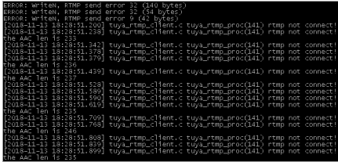
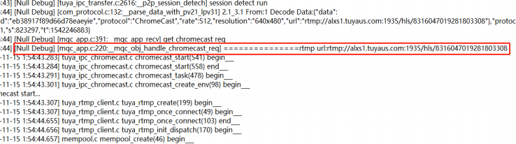

Chromecast功能开发
- 开发流程：
1、调用 Chromecast 初始化函数：TUYA_APP_Enable_EchoShow_Chromecast
2、创建一个新的音频通道E_CHANNEL_AUDIO_2RD，初始化方式如下（因为chromecast需要特定的aac的音频格式，所以为了避免和预览的语音冲突，需要开辟新的音频通道）
(1)、在IPC_APP_Set_Media_Info中增加E_CHANNEL_AUDIO_2RD通道的媒体参数设置s_media_info.channel_enable[E_CHANNEL_AUDIO_2RD] = TRUE; /* Whether to enable local sound collection */ s_media_info.audio_codec[E_CHANNEL_AUDIO_2RD] = TUYA_CODEC_AUDIO_AAC_ADTS;/* Encoding format */ s_media_info.audio_sample [E_CHANNEL_AUDIO_2RD]= TUYA_AUDIO_SAMPLE_8K;/* Sampling Rate */ s_media_info.audio_databits [E_CHANNEL_AUDIO_2RD]= TUYA_AUDIO_DATABITS_16;/* Bit width */ s_media_info.audio_channel[E_CHANNEL_AUDIO_2RD]= TUYA_AUDIO_CHANNEL_MONO;/* channel */ s_media_info.audio_fps[E_CHANNEL_AUDIO_2RD] = 25;/* Fragments per second */
if(channel == E_CHANNEL_AUDIO_2RD)
{
PR_DEBUG("audio_sample %d, audio_databits %d, audio_fps %d",s_media_info.audio_sample[E_CHANNEL_AUDIO_2RD],s_media_info.audio_databits[E_CHANNEL_AUDIO_2RD],s_media_info.audio_fps[E_CHANNEL_AUDIO_2RD]);
ret = tuya_ipc_ring_buffer_init(channel, s_media_info.audio_sample[E_CHANNEL_AUDIO_2RD]*s_media_info.audio_databits[E_CHANNEL_AUDIO_2RD]/1024,s_media_info.audio_fps[E_CHANNEL_AUDIO_2RD],0,NULL);
}
(3)、同E_CHANNEL_AUDIO通道一样，调用TUYA_APP_Put_Frame将E_CHANNEL_AUDIO_2RD通道的音频数据送入SDK，每一帧音频pts必须与视频的pts保持一致，单位是微秒，在echoshow开发章节中有提到视频pts的处理方式，建议采取设备时间作为pts，那么chromecast功能音频的pts的做法建议，送入SDK的第一帧音频的pts为设备时间，此后每一帧自加128000微秒（原因是8k 16bit的aac音频的帧间隔是128毫秒，因为aac的一帧原始数据包为1024个sample，samplerate为8k的话，那么1s内的帧数为8k/1024,那么一帧的时间为1s / sampleRate / 1024）
3、若设备端无法直接输出 AAC 音频格式，可以下载 fdk-aac 开源库，将 PCM 音频格式转换为AAC（ADTS），库文件大小约为：4~5MB，音频转换范例代码如下 pcm转aac源码.zip(找FAE提供)
4、若设备端日志出现如下图所示，则音频信号不正确，服务器主动关闭设备连接：

5、Chromecast 视频流畅度优化建议：
a) 增加帧率与 I 祯的频率
b) 谷歌仅有 7 秒钟 timeout 等待时间，设备需要对 chromecast 功能给予最快的反应
c) SDK 默认设定采用子码流视频通道，子码流的码率设定范围需要下降至：300~500kbps
6、验证 chromecast：在设备收到服务端命令并反馈信号时，复制以下命令在电脑端进行测试：
若功能正常，则能获取到设备端的音视频信息，命令：ffplay -v debug +（日志中的 url）
以下图为例:ffplay -v debug rtmp://alxs1.tuyaus.com:1935/hls/8316047019281803308
